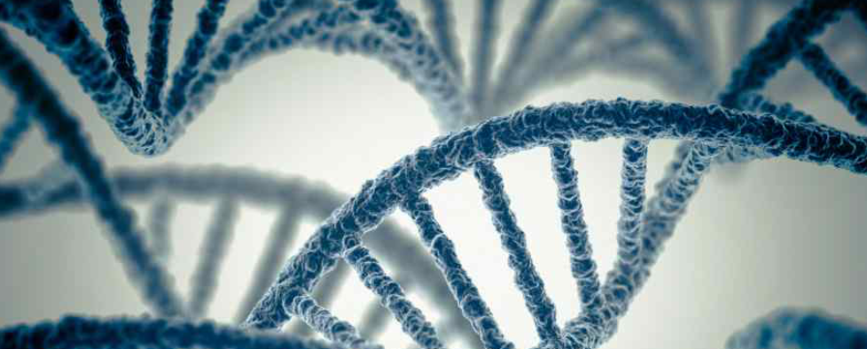

Research direction

Transposable elements (TEs) are mobile DNA in
mammalian genome. They contributed to more than 40%
of mammalian genome. There are two classes of
transposable elements: Class I and Class II. Class I
elements transpose through "copy and paste" manner
while Class II elements transpose through "cut and
paste". We are mainly studying the function and
regulation of class I transposable elements, namely
retrotransposons. Retrotransposons mainly consisted
of LINEs, SINEs and endogenous retroviruses (ERVs).
Most of ERVs are silenced in cells, but some of them
are activated in diseased cells, such as cancer
cells. Embryonic stem cells (ES cells) could silence
different groups of ERVs, as well as exogenous
retrovirus. Therefore, studying the mechanism of ERV
silencing in ES cells will facilitate us to further
understand the maintenance of ES cell genome
stability, mechanism used by retrovirus to remain
dormant, and the development of cancer. ERVs are
classified into three groups: ERV I, ERV II and ERV
III. There is still lack of knowledge about how
transcriptional regulators repress different ERV
families in ES cells and how this leads to distinct
epigenetic silencing mechanisms.
Sometimes, ERVs are expressed. For
example, we found that ERVs are expressed in early
embryo development of both human and mouse. The
expressed retrotransposon can act as important
functional domains of certain long noncoding RNAs (lncRNAs).
They could participate in the regulation of cell
fate decision. Some retrotransposons are
specifically expressed in embryonic stem cells. To
apply embryonic stem cells in regenerative medicine,
it is critical for us to be able to manipulate fates
of ESCs to expand them and differentiate them to a
specific lineage. Therefore, it is worth to study
the role of retrotransposon-containing lncRNAs and
the role of noncoding retrotransposon RNA domains in
embryonic stem cells.
Our research fields cover
Epigenetics, Genomics, and
Stem cell biology. We
utilize tools such as
RNA-seq, ChIP-seq, CRISPR
in combination with other genetic and molecular
biology tools to study mechanism of regulation and
function of transposable elements. For example, how
TE DNA and their
derived lncRNAs
co-function with proteins and how they regulate host
cell transcriptome and
proteome profiles. Ongoing project in our lab
include: 1) studying the epigenetic regulation of
TEs in embryonic stem cells; 2) studying the role of
TE-derived lncRNAs in embryonnic stem cells and
early embryo development.